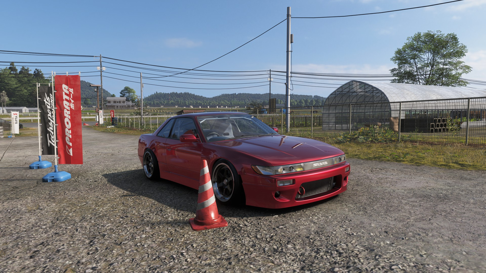
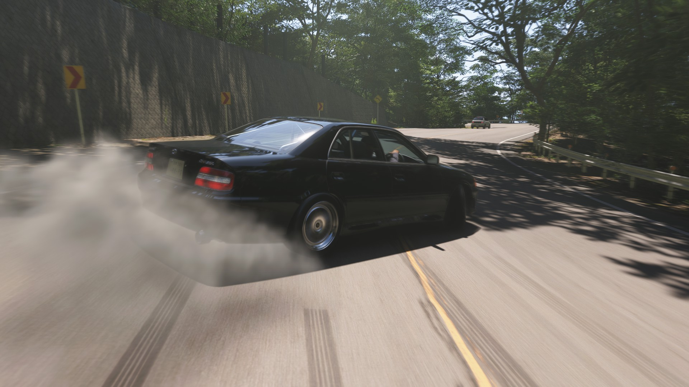
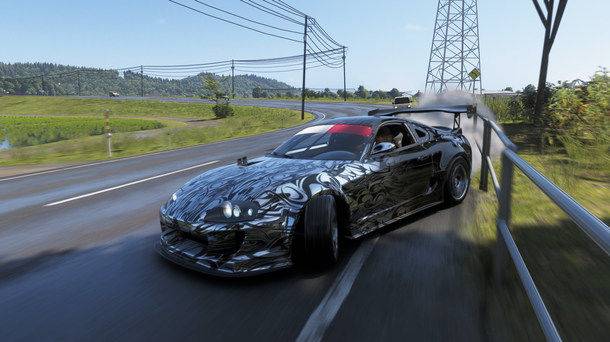

【Forza Horizon 6 レビュー】前作トロコン＆実車好きが語る！ハイエンド環境（3画面・DDハンコン）での本音
公開日: 2026年6月7日 | カテゴリ: レビュー / レースゲーム
待ちに待ったシリーズ最新作『Forza Horizon 6』。前作のFH5は実績コンプリート（トロコン）するまで遊び尽くした身として、早速プレイしてみました。
ただ、今回はいつものパッドではなく、iRacingやAssetto Corsaで使っている本格的なシム環境（Simagic Alpha Mini ＋ Fanatec V3 ＋ 3画面）でどこまで「本気で」走れるかに焦点を当ててレビューします。過去にS13やECR33などの実車をいじってきた車好きの視点から見ると、圧倒的なグラフィックの反面、ハイエンドPC環境ならではの「設定の壁」がかなり高い作品だと感じました。

ハイエンドハンコン（DD）での設定は「じゃじゃ馬」
まず直面したのが、ダイレクトドライブ（DD）ハンコンのセッティングの煩雑さです。
本格的なレースシムのように、繋げばある程度自然に走れるというわけにはいきません。私が愛用しているSimagic Alpha Miniのようなハイエンド帯のホイールベースは、ゲーム側のネイティブサポートが弱く、フォースフィードバック（FFB）の調整にかなりの時間を溶かしました。
実車のステアリングインフォメーションに近づけようと数値をいじっても、どこか「ゲーム的な不自然な重さ」や振動が抜けず、シムレベルの自然なセルフアライニングトルクを得るには、有志のフォーラムを漁って専用の数値を細かく打ち込むなど、かなりの根気が必要です。
Simagic向けFFB調整メモ（FH6）
| 項目 | 目安 | コメント |
|---|---|---|
| Force Feedback | 50〜70% | 100%はSimagicで振動が強すぎる |
| Steering | 900° | シム側と一致させる |
| Damper | 0〜10 | 上げると「ベタベタ」感が増す |
| Mechanical Trail | 低め | ARCADE寄りの挙動を抑える |
| Vibration | Off〜Low | エンジン振動がノイズになる |
iRacingやAssetto Corsaで慣れた感覚をそのまま持ち込むと必ずズレます。FH6は「アーケードの楽しさ」優先のFFB設計なので、シム側のゲインを下げて受け入れるのが現実的です。
3画面設定の苦労と、相変わらずの「VR非対応」
ネイティブ非対応なトリプルモニター
私の環境は32インチモニターの3画面構成ですが、FH6でも相変わらず3画面へのネイティブ対応（各画面の角度やベゼル幅を個別に設定し、歪みを補正する機能）は不十分でした。NVIDIA Surround等で無理やり広げたようなFOV（視野角）になりがちで、サイドウィンドウの景色がどうしても歪んでしまいます。
Surround FOVの現実的な妥協点
- FOV： 単画面110°前後。広げすぎると端が引き伸ばされる
- Bezel Correction： 物理ベゼル幅（mm）を正確に入力
- カメラ： フード内視点より、やや後ろの位置の方が歪みが少ない
- 期待値： iRacing級の没入感は期待しない。「広い画面で流す」が正解
実車のような自然な空間把握をするには、PCゲーマー特有の「面倒な設定の儀式」が必須になります。
PCVRユーザーの悲願はまたも叶わず
個人的に最も残念だったのが、今回もVR非対応だったことです。これだけ広大で美しいオープンワールドを、Oculus Rift Sを被ってオープンカーで流せたらどんなに最高か…。没入感という点では、やはりMOD等でVR化できる他のタイトルに一歩譲る形になってしまっています。

「シム」ではなく、最高峰の「カーライフ・ゲーム」
ネガティブな点が多くなってしまいましたが、それはあくまで「ゴリゴリのシム機材で動かそうとした場合」の話です。
パッドの方が向いている場面
- ストーリー・イベント： 細かいFFB不要。ソファでリラックス
- ドリフト・スタント： 素早いカウンターステアはパッドが楽
- 設定にうんざりした時： Xboxコントローラーに戻るのが最善策
- 初見プレイ： DDの振動に集中力を奪われない
前作以上に磨きがかかった車のモデリングや、エンジン音のこだわりは本当に素晴らしく、実車で足回りを交換したりアライメントを取ったりするあのワクワク感を、手軽にゲーム内で味わえるのはForza Horizonシリーズならではの絶対的な魅力です。シビアな挙動を求めるのではなく、「最高の車で、最高の景色を流す」という本来の楽しみ方に立ち返れば、間違いなく神ゲーと言えます。
まとめ
Forza Horizon 6は、パッドやエントリーモデルのハンコンで遊ぶ分には文句なしのエンターテイメントです。しかし、ハイエンドなシム機材や3画面環境でプレイしようと考えている方は、「気持ちよく走れるようになるまでの設定にかなり時間がかかる」ことを覚悟しておいた方が良いでしょう。
Simagic Alpha MiniのFFBは、Assetto Corsaでは10Nmフル活用できますが、FH6では5Nm以下に抑えるのが現実的です。設定にうんざりした日は、おとなしくXboxコントローラーに持ち替えて、ソファでくつろぎながらプレイするのが一番の正解かもしれません。
FH5トロコン勢の視点
FH5でトロコンまで完走した身として、FH6のコンテンツ量は間違いなく増えています。Seasonalイベント、カスタムルート、Photo Mode——シム設定に悩む前に、パッドでこれらを楽しむ価値は十分あります。DDハンコンは「ストーリーを追いながら、たまに本気で走る」用途に割り切ると、ストレスが激減します。
3画面の歪みは、Single Screen Mode（中央1画面のみ）に戻す選択肢もあります。Surroundの没入感と引き換えに、UIやミニマップの視認性が上がるため、レース中はSingle、フリーランはSurround——と使い分けているプレイヤーも多いです。
総合評価
FH6は「カーライフ・エンタメ」として10点、「シム環境での本気走行」として6点——私の評価です。Simagic + 3画面ユーザーは、設定に半日〜数日を覚悟するか、最初からパッド推奨。VR非対応は残念ですが、Oculus Rift SでAssetto Corsaや首都高MODが楽しめる今、FH6は「景色を流す週末用」として割り切ると、ストレスなく楽しめます。

Photo Modeと車コレクションの所感
シム設定に悩む前に、FH6の真骨頂であるPhoto Modeと車両コレクションを楽しむ価値は十分にあります。FH5トロコン勢として、まず触ったのがこの2つでした。
Photo Mode
- 被写界深度・シャッタースピード： 実写に近いボケ感。夕方の光と相性が抜群
- カメラ自由度： 走行中スナップより、イベント後の静止ポーズの方が構図を作りやすい
- 3画面ユーザー： Surroundの歪みはPhoto Modeには影響しない。Single Screen推奨
80スープラやJZX100など、実車で触れたことのあるモデルがPhoto Modeで蘇る瞬間は、FFB設定のストレスを一瞬で吹き飛ばしてくれます。SNS用の1枚を撮るだけでも、FH6のグラフィック投資の価値は回収できます。
車コレクション
FH5比で車種数・バリエーションは増加。クラシックJDMから最新EVまで、オートサロン気分で並べられるのはForzaならではです。ただし「全車コンプ」はFH5以上に時間がかかる覚悟が必要。SeasonalイベントとForzathonを並行しないと、限定車の取りこぼしが発生します。DDハンコンで全車試乗するより、パッドでイベント消化→気に入った車だけシム設定で本気走行、がストレスフリーな進め方です。
誰が買うべきか：購入判断ガイド
| プレイヤータイプ | おすすめ度 | 理由 |
|---|---|---|
| パッド/Xbox勢 | ◎ 強推奨 | 設定不要で即楽しめる。FH5経験者なら迷わず |
| 車好き・Photo Mode派 | ◎ 強推奨 | 車種数・描写力はシリーズ最高クラス |
| エントリー〜中級ハンコン | ○ 推奨 | G923等ならFFB調整は比較的楽 |
| Simagic等ハイエンドDD | △ 条件付き | 設定に半日〜数日。パッド併用前提 |
| 3画面シムユーザー | △ 条件付き | Surround歪みを許容できるなら可 |
| VRメイン勢 | × 非推奨 | VR非対応。AC/首都高MODの方が没入感 |
| 本格シム・iRacingメイン | △ サブタイトル向き | 週末の「景色を流す」用として割り切り |
結論：FH6は「カーライフ・エンタメ」として買うべき作品です。Assetto Corsaで本気のタイムを追う人には物足りませんが、FH5を100時間以上遊んだ人、実車いじり経験者、Photo Mode好きには刺さります。Simagic＋3画面環境の人は、最初から「パッドでストーリー＋イベント、DDはたまに本気走行」と割り切れば、FH5以上に長く楽しめる1本になるでしょう。